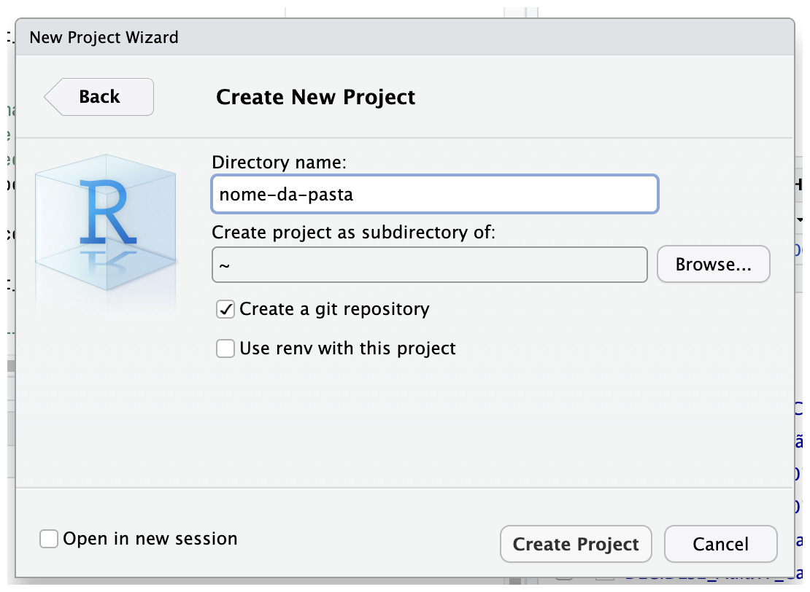
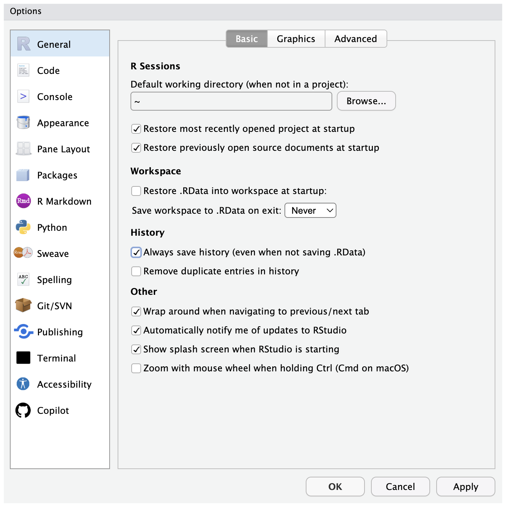
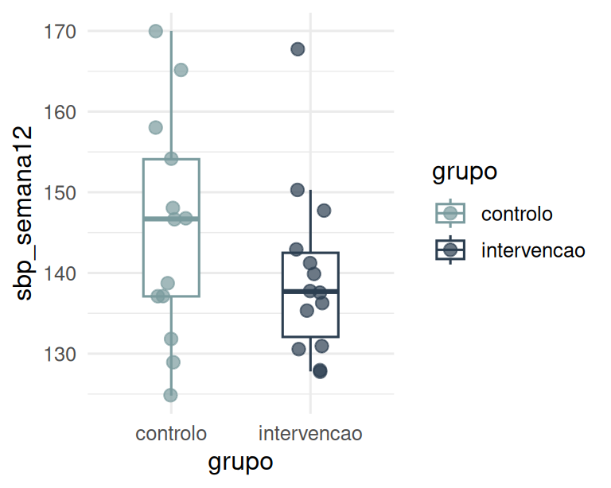
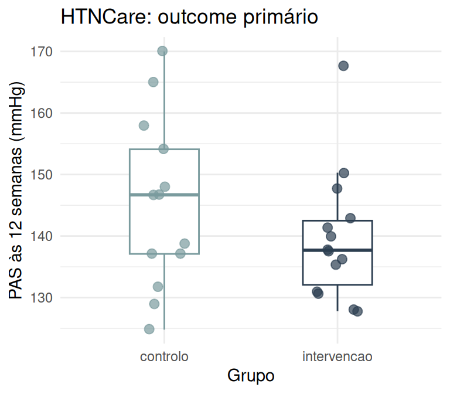
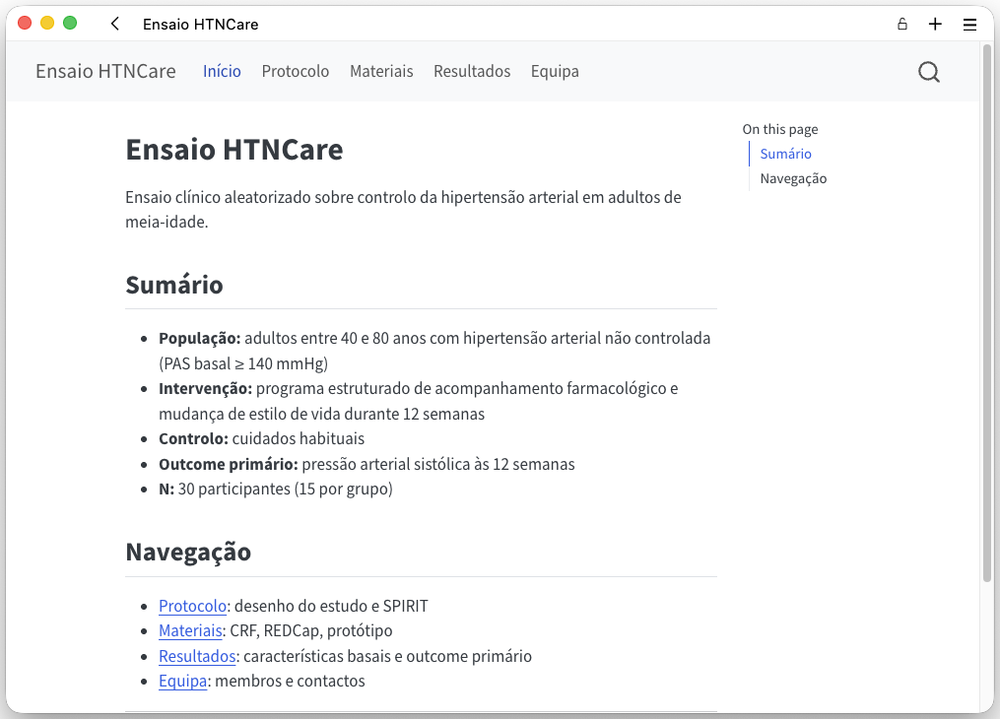
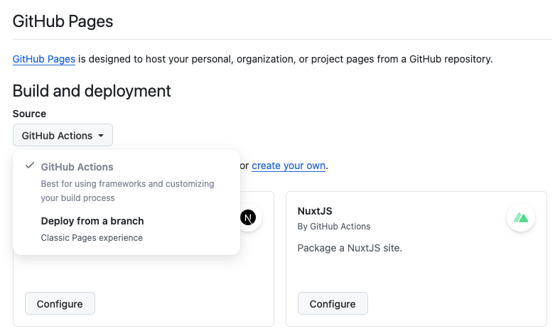

![]()
# A tibble: 6 × 6
patient_id grupo idade sexo sbp_baseline sbp_semana12
<chr> <chr> <dbl> <chr> <dbl> <dbl>
1 HTN001 intervencao 52.2 M 141 131.
2 HTN002 intervencao 59.6 F 180 168.
3 HTN003 intervencao 45.3 F 154. 140.
4 HTN004 intervencao 67.9 M 141 131
5 HTN005 intervencao 50 M 158. 150.
6 HTN006 intervencao 40 M 158 148.R/RStudio e Publicação Web com Quarto
TP9 · Ferramentas de Produtividade
2026-04-21
Abertura
Onde estamos no arco do ensaio
| Fase | Estado |
|---|---|
| TP1 a TP8 | Concluído |
| E2 (materiais) | Entregue |
| TP9 (hoje) | Análise em R + site Quarto |
| TP10 (próxima semana) | Trabalho autónomo |
| TP11 (daqui a 3 semanas) | Apresentação final (o site) |
Objectivos desta aula
- Analisar os dados do pré-teste em R
- Construir uma Tabela 1 com
gtsummary - Construir o gráfico do outcome primário com
ggplot2 - Montar um site Quarto multi-página
- Publicar no GitHub Pages
Pré-requisitos
Verificar antes de começar:
- R 4.4 ou superior
- RStudio recente
- Quarto CLI 1.5 ou superior
- Conta GitHub activa
Instalar os pacotes
Correr uma única vez, no console, nunca dentro de um script.
Verificar carregamento
Sem mensagens de erro: ambiente pronto.
RStudio produtivo
Projectos RStudio
Um projecto é uma pasta com um ficheiro .Rproj.
Define a raiz do trabalho e isola o ambiente.
Porquê usar projectos
here::here()funciona a partir da raiz do projecto- Sem
setwd()no código - Cada projecto tem o seu histórico
- Partilha e reprodução sem adaptações de paths
Criar um projecto
Ficheiro > New Project > New Directory > New Project
Confirmar “Create a git repository”.
Leitura obrigatória pós-aula: tiagojct.eu/notes/rst-bp

Estrutura de um projecto
ensaio-analise/
├── data/
│ ├── raw/
│ └── processed/
├── scripts/
├── outputs/
│ ├── tabelas/
│ └── figuras/
└── ensaio-analise.RprojResponsabilidades por pasta
data/raw/: só de leitura, dados originaisdata/processed/: dados limpos, gerados por scriptsscripts/: todo o códigooutputs/: tabelas e figuras derivadas
Os outputs são sempre regeneráveis a partir do código.
Não guardar .RData
Por omissão, o RStudio guarda o workspace ao fechar.
Dizer sempre não.
Desactivar permanentemente
Tools > Global Options > General > Workspace
- “Restore .RData into workspace at startup”: desactivar
- “Save workspace to .RData on exit”: Never

General > Workspace do RStudio">Porquê não guardar
O código deve ser a única fonte de verdade.
Um workspace guardado esconde dependências e impede reprodução.
Atalhos essenciais
| Atalho | Acção |
|---|---|
| Ctrl/Cmd + Enter | Executar linha ou selecção |
| Ctrl/Cmd + Shift + M | Inserir pipe (ver nota abaixo) |
| Alt + - | Inserir <- |
| Ctrl/Cmd + Shift + F10 | Reiniciar sessão R |
Por omissão, Ctrl/Cmd + Shift + M insere %>%. Para o pipe nativo \|>, activar Tools > Global Options > Code > “Use native pipe operator”.
Mais atalhos úteis
| Atalho | Acção |
|---|---|
| Ctrl/Cmd + Shift + C | Comentar/descomentar |
| Ctrl/Cmd + L | Limpar consola |
| Tab | Auto-completar |
Reiniciar a sessão antes de renderizar é boa prática.
Estilo de código
Regras de estilo
- Nomes descritivos em
snake_case - Sections com
# ----para navegação no outline - Uma operação por linha dentro do pipe
- Pipe nativo
|>, não%>% library()no topo,install.packages()nunca no script
Positron
Positron é o novo IDE da Posit, baseado em VS Code.
- Mesmo motor Quarto
- Suporte nativo a Python e R em simultâneo
- Interface familiar para quem já usa VS Code
Hoje usamos RStudio. Positron é o caminho a explorar depois.
Leitura e exploração
Carregar pacotes
Sempre no topo do script.
library vs install.packages
library() carrega um pacote já instalado.
install.packages() instala do CRAN.
Só instalar uma vez, no console. Nunca num script partilhado.
Paths frágeis
Este código só funciona na máquina do João.
Paths reprodutíveis com here
here::here() resolve o path a partir da raiz do projecto.
Funciona em qualquer máquina.
O dataset da aula
HTNCare: ensaio fictício sobre controlo da hipertensão.
- N = 30 (15 intervenção + 15 controlo)
- Outcome primário: pressão sistólica às 12 semanas
Variáveis do HTNCare
patient_id: identificadorgrupo: intervencao / controloidade,sexo,imc,diabetes: características basaissbp_baseline,sbp_semana12: pressão sistólica (mmHg)dbp_baseline,dbp_semana12: pressão diastólica (mmHg)adesao: adesão ao tratamento (0 a 1)
Ler o dataset
Tibble com 30 linhas e 11 colunas (mostradas 6 variáveis acima).
Explorar a estrutura
Rows: 30
Columns: 11
$ patient_id <chr> "HTN001", "HTN002", "HTN003", "HTN004", "HTN005", "HTN006…
$ grupo <chr> "intervencao", "intervencao", "intervencao", "intervencao…
$ idade <dbl> 52.2, 59.6, 45.3, 67.9, 50.0, 40.0, 40.0, 58.2, 54.2, 64.…
$ sexo <chr> "M", "F", "F", "M", "M", "M", "F", "M", "M", "M", "M", "M…
$ imc <dbl> 29.0, 30.4, 30.6, 20.5, 28.3, 34.6, 30.6, 19.8, 26.9, 27.…
$ diabetes <dbl> 0, 1, 0, 0, 0, 0, 0, 0, 0, 1, 0, 0, 0, 1, 0, 1, 0, 0, 0, …
$ sbp_baseline <dbl> 141.0, 180.0, 154.3, 141.0, 157.5, 158.0, 158.5, 141.0, 1…
$ sbp_semana12 <dbl> 130.6, 167.7, 139.9, 131.0, 150.3, 147.7, 141.3, 135.3, 1…
$ dbp_baseline <dbl> 90.8, 88.0, 83.0, 101.5, 97.4, 93.6, 94.1, 102.4, 85.7, 8…
$ dbp_semana12 <dbl> 89.9, 89.0, 74.9, 92.2, 81.3, 90.2, 85.5, 94.4, 75.7, 89.…
$ adesao <dbl> 0.74, 0.89, 0.75, 0.80, 0.81, 0.90, 0.79, 0.87, 0.92, 0.8…Estatísticas rápidas
Mínimo, máximo, mediana, média, quartis, NAs.
idade imc sbp_baseline sbp_semana12
Min. :40.00 Min. :19.80 Min. :141.0 Min. :124.8
1st Qu.:46.83 1st Qu.:24.07 1st Qu.:144.1 1st Qu.:133.6
Median :54.80 Median :27.95 Median :148.5 Median :138.8
Mean :55.07 Mean :27.16 Mean :151.8 Mean :142.3
3rd Qu.:63.33 3rd Qu.:29.20 3rd Qu.:157.9 3rd Qu.:147.8
Max. :74.20 Max. :34.60 Max. :180.0 Max. :170.0
NA's :3 Verificar antes de analisar
- Os tipos de variável estão correctos?
- Há NAs onde não se esperam?
- Os valores estão dentro dos limites plausíveis?
Nomes problemáticos
Limpar com janitor
Filtrar linhas
filter() selecciona linhas que cumprem uma condição.
# A tibble: 6 × 4
patient_id grupo idade sbp_baseline
<chr> <chr> <dbl> <dbl>
1 HTN001 intervencao 52.2 141
2 HTN002 intervencao 59.6 180
3 HTN003 intervencao 45.3 154.
4 HTN004 intervencao 67.9 141
5 HTN005 intervencao 50 158.
6 HTN006 intervencao 40 158 Seleccionar colunas
select() escolhe colunas pelo nome.
# A tibble: 6 × 3
patient_id sbp_baseline sbp_semana12
<chr> <dbl> <dbl>
1 HTN001 141 131.
2 HTN002 180 168.
3 HTN003 154. 140.
4 HTN004 141 131
5 HTN005 158. 150.
6 HTN006 158 148.Criar variáveis
mutate() cria ou transforma colunas.
# A tibble: 6 × 4
patient_id sbp_baseline sbp_semana12 reducao_sbp
<chr> <dbl> <dbl> <dbl>
1 HTN001 141 131. 10.4
2 HTN002 180 168. 12.3
3 HTN003 154. 140. 14.4
4 HTN004 141 131 10
5 HTN005 158. 150. 7.20
6 HTN006 158 148. 10.3 Contar ocorrências
Tabela 1
Porquê uma Tabela 1
Num ensaio aleatorizado, a Tabela 1 serve dois propósitos:
- Descrever a amostra
- Verificar o balanceamento dos grupos
Convenção de apresentação
Estatísticas descritivas por grupo, com coluna “Total”.
Variáveis contínuas: mediana (Q1, Q3) ou média (DP).
Variáveis categóricas: n (%).
tbl_summary em uma linha
| Characteristic | controlo N = 151 |
intervencao N = 151 |
|---|---|---|
| idade | 59 (47, 64) | 53 (46, 60) |
| sexo | ||
| F | 6 (40%) | 4 (27%) |
| M | 9 (60%) | 11 (73%) |
| imc | 26.8 (23.7, 29.2) | 28.3 (23.7, 30.6) |
| sbp_baseline | 148 (141, 160) | 152 (144, 158) |
| 1 Median (Q1, Q3); n (%) | ||
O que gtsummary faz
- Detecta o tipo de cada variável
- Escolhe estatísticas adequadas
- Estratifica por
by - Formata a tabela automaticamente
Adicionar total
Coluna “Overall” com o total da amostra.
| Characteristic | Overall N = 301 |
controlo N = 151 |
intervencao N = 151 |
|---|---|---|---|
| idade | 55 (47, 64) | 59 (47, 64) | 53 (46, 60) |
| sexo | |||
| F | 10 (33%) | 6 (40%) | 4 (27%) |
| M | 20 (67%) | 9 (60%) | 11 (73%) |
| imc | 28.0 (23.7, 29.2) | 26.8 (23.7, 29.2) | 28.3 (23.7, 30.6) |
| sbp_baseline | 149 (144, 158) | 148 (141, 160) | 152 (144, 158) |
| 1 Median (Q1, Q3); n (%) | |||
Adicionar p-values
| Characteristic | Overall N = 301 |
controlo N = 151 |
intervencao N = 151 |
p-value2 |
|---|---|---|---|---|
| idade | 55 (47, 64) | 59 (47, 64) | 53 (46, 60) | 0.4 |
| sexo | 0.4 | |||
| F | 10 (33%) | 6 (40%) | 4 (27%) | |
| M | 20 (67%) | 9 (60%) | 11 (73%) | |
| imc | 28.0 (23.7, 29.2) | 26.8 (23.7, 29.2) | 28.3 (23.7, 30.6) | 0.5 |
| sbp_baseline | 149 (144, 158) | 148 (141, 160) | 152 (144, 158) | 0.9 |
| 1 Median (Q1, Q3); n (%) | ||||
| 2 Wilcoxon rank sum test; Pearson’s Chi-squared test | ||||
Nota sobre p-values no baseline
Num RCT bem aleatorizado, diferenças de baseline são fruto do acaso.
add_p() é útil como verificação, mas controverso como prova de balanceamento. Usar com critério.
Formatar labels
| Characteristic | controlo N = 151 |
intervencao N = 151 |
|---|---|---|
| Idade (anos) | 59 (47, 64) | 53 (46, 60) |
| Sexo | ||
| F | 6 (40%) | 4 (27%) |
| M | 9 (60%) | 11 (73%) |
| IMC (kg/m²) | 26.8 (23.7, 29.2) | 28.3 (23.7, 30.6) |
| PAS basal (mmHg) | 148 (141, 160) | 152 (144, 158) |
| 1 Median (Q1, Q3); n (%) | ||
Controlar estatísticas
| Characteristic | controlo N = 151 |
intervencao N = 151 |
|---|---|---|
| idade | 56.3 (10.0) | 53.8 (9.9) |
| sexo | ||
| F | 6 (40%) | 4 (27%) |
| M | 9 (60%) | 11 (73%) |
| imc | 26.8 (3.7) | 27.5 (4.2) |
| sbp_baseline | 151.7 (11.3) | 151.9 (10.5) |
| 1 Mean (SD); n (%) | ||
Exportar para HTML
Para integrar no Quarto, basta incluir tabela num bloco R. Não é preciso exportar.
Gráfico do outcome primário
Grammar of graphics
Um gráfico é construído por camadas.
- data: o tibble
- aes(): mapeamento de variáveis para propriedades visuais
- geom_: a geometria
- theme_: o tema visual
Boxplot mínimo
Adicionar pontos
Adicionar cor
Cores da identidade visual
Manter paleta consistente em todo o projecto.

Labels e tema
# labs: títulos e eixos
# theme_minimal: tema limpo
ggplot(dados,
aes(x = grupo,
y = sbp_semana12,
colour = grupo)) +
geom_boxplot(outlier.shape = NA,
width = 0.4) +
geom_jitter(width = 0.12,
alpha = 0.7,
size = 2.5) +
scale_colour_manual(
values = c(
"intervencao" = "#2C3E50",
"controlo" = "#7A9B9E"
)
) +
labs(
x = "Grupo",
y = "PAS às 12 semanas (mmHg)",
title = "HTNCare: outcome primário"
) +
theme_minimal(base_size = 13) +
theme(legend.position = "none")
Guardar a figura
ggsave() grava o último gráfico gerado. No guião, o código final atribui a figura a fig_outcome e passa plot = fig_outcome explicitamente.
Site Quarto
O que é Quarto
Sistema de publicação científica.
Converte ficheiros .qmd em HTML, PDF, revealjs, e outros formatos.
Porquê um website
Agrega múltiplas páginas com:
- Navegação consistente
- Tema partilhado
- Uma única configuração
Criar o projecto
No Terminal do RStudio:
Estrutura gerada
ensaio-site/
├── _quarto.yml
├── index.qmd
├── about.qmd
└── styles.cssConfiguração mínima
# _quarto.yml: configuração do site
project:
type: website
1 output-dir: docs
website:
title: "Ensaio HTNCare"- 1
- Directoria de saída do render. Necessária para GitHub Pages com “Deploy from branch”.

Navbar
Páginas a criar
index.qmd: homeprotocolo.qmd: SPIRIT da E1materiais.qmd: CRF, REDCap, E2resultados.qmd: análise dos dadosequipa.qmd: membros e contactos
Página mínima
Uma página é um .qmd com YAML e conteúdo Markdown.
Integrar uma tabela
Chamar gtsummary
A tabela é renderizada no HTML directamente.
| Characteristic | Overall N = 301 |
controlo N = 151 |
intervencao N = 151 |
|---|---|---|---|
| idade | 55 (47, 64) | 59 (47, 64) | 53 (46, 60) |
| sexo | |||
| F | 10 (33%) | 6 (40%) | 4 (27%) |
| M | 20 (67%) | 9 (60%) | 11 (73%) |
| sbp_baseline | 149 (144, 158) | 148 (141, 160) | 152 (144, 158) |
| 1 Median (Q1, Q3); n (%) | |||
Incluir um gráfico
Preview em tempo real
Build completo
Publicação
Passos de publicação
- Commit e push para
main - Aguardar o workflow correr uma vez (cria a branch
gh-pages) - Settings > Pages > Source: “Deploy from a branch”
- Branch:
gh-pages· Folder:/ (root)· Save

Pages com Source 'Deploy from a branch' apontado a gh-pages/root">URL do site
https://utilizador.github.io/nome-do-repo
O workflow corre em cada push para main.
Estrutura do workflow
on:
push:
1 branches: main
jobs:
build-deploy:
2 runs-on: ubuntu-latest
steps:
3 - uses: actions/checkout@v4
4 - uses: r-lib/actions/setup-r@v2
5 - uses: r-lib/actions/setup-r-dependencies@v2
with:
packages: |
tidyverse
gtsummary
6 - uses: quarto-dev/quarto-actions/setup@v2
7 - run: quarto render
8 - uses: quarto-dev/quarto-actions/publish@v2
with:
target: gh-pages- 1
-
Dispara a cada push para
main. - 2
- Máquina virtual Ubuntu fornecida pelo GitHub.
- 3
- Clona o repositório.
- 4
- Instala R.
- 5
- Instala pacotes R necessários.
- 6
- Instala Quarto.
- 7
- Renderiza o site.
- 8
-
Publica o output na branch
gh-pages.
Alternativa: Posit Connect Cloud
Posit Connect Cloud publica aplicações Shiny, documentos Quarto, e APIs.
- Deploy via drag-and-drop ou GitHub
- Plano gratuito disponível
- Útil para sites dinâmicos
Para este projecto, GitHub Pages é mais simples.
Encerramento
Referência obrigatória
RStudio: Best Practices for Scientific Work
Cobre projectos, estrutura de pastas, here::here(), estilo de código, reprodutibilidade.
Documentação Quarto
quarto.org tem tudo o que precisam:
- Tutoriais passo a passo
- Referência completa (YAML, opções de chunks, formatos de output)
- Exemplos de sites, livros, revealjs, PDF
- Discussões no GitHub: suporte activo da comunidade e da Posit
Consultar sempre primeiro antes de perguntar.
Próximos passos
- Esta semana: rever o guião e começar o exercício
- Próxima semana (TP10): trabalho autónomo, entregar formativa no Moodle até ao fim da semana (estrutura do site + TP8)
- Semana seguinte: feedback à entrega formativa
- Semana a seguir (TP11): apresentação final (site completo com declaração de IA) no dia da aula
Contacto
Tiago Jacinto
Dúvidas durante a TP10: Moodle ou email.
FP 25/26 · SauD InoB · FMUP